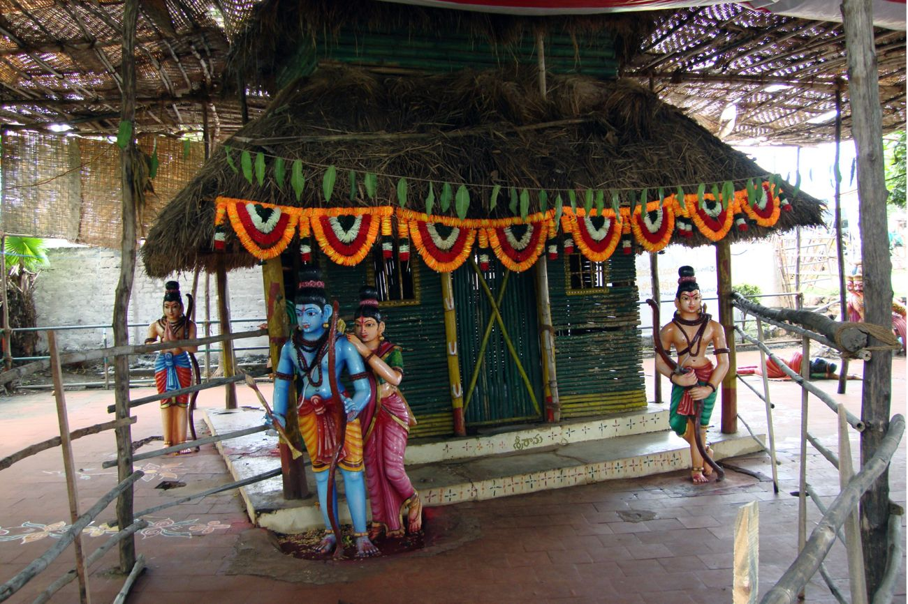

<div class="container-fluid five">
    <div class="row">
        <div class="col-xs-12 col-sm-12 col-md-12 col-lg-12">

            <h1>Rajahmundry To Bhadrachalam 2 Days Tour Package</h1>
            
            <h6>Parnasala Temple</h6>
            
            <div class="price5">
                <h3>Adult : Rs.3800/-(A/C)</h3>
                <h3>Child  : Rs.3200/- (A/C)</h3>
                <h3>Child Age limit : 5 to 10 Years</h3>

                <h4>Reporting Place:</h4>
                <h5>Punnami Tours & Travels
                    Time: 7.00 AM, Near Titan Watch Showroom, Godavari Bund Road, Rajahmundry.</h5>
            </div>

            <div class="schedule5">
                <h2>Tour Schedule:</h2>
                
                <h4>1st Day:</h4>
                <p> 7.00 AM to 8.30 AM Road journey by vehicle from Rajahmundry to Polavaram revu /
                    Purushothapatnam revu</p>
                <p>9.00 AM Break fast in the Luxury Boat, then journey starts on River Godavari                </p>
                <p>10.30 AM Reaches Posammagandi village. Darshan Goddes Posamma. then journey towards
                    Papikondalu.</p>
                <p>11:00 AM Boat journey. via  Devipatnam, while on boat  view demolishing old Police Station
                    at the time of British rule,the said Police station was attacked alongwith other two situated
                    in  different  remote  agency  areas  at Y'ramavaram  and  Addateegala  by Freedom Fighter
                    Mr. Alluri Seetharama Raju by giving advance intimation through "Mirchi Tapa"</p>
                <p>1:00 PM Veg. Lunch in the Boat while on journey.                </p>
                <p>2:00 PM Reach Papi hills which are three in number situated like a wall in the middle of River
                    godavari separating districts EAST, WEST and KHAMMAM, enjoy scenic beauty.</p>
                <p>3:00 PM Reaches Perantapalli village of Khammam district. Visit "Ramakrishna muni vatika
                    which was established by Late Poojya Swamiji Balananda Saraswathi during 1927 then darshan
                    of Swayambu Lingakara  Sri Veereswara Swamy.</p>
                <p>3:30 PM Journey by Tribal boat.              </p>
                <p>5:00 PM Reaches Koida village. Boat journey over.                </p>
                <p>6:00 PM Journey by Non A/C. Vehicle to Bhadhrachalam.                </p>
                <p>8.30 PM Reach Bhadrachalam and allotment of Non A/c deluxe rooms then vegetarian dinner                </p>


    
                <h4>2nd Day:</h4>
                <p>5.30 AM Visit Bhadrachalam temple and darshan of Lord Rama.</p>
                <p>6:30 AM Journey by road and reaches Heritage, Parnasala 35 KM</p>
                <p>7:30AM Darshan of Lord Rama and local sight seeing viz., Srirama Simhasanam, Sithammavari
                    Naracheeralu etc.,</p>
                <p>8:30 AM Return to Bhadrachalam.                </p>
                <p>9:30 AM Break fast then room check out.               </p>
                <p>10:00 AM By road journey to Jangareddigudem.(via) Kukkunuru, Ashwaraopeta.                </p>
                <p>1.00 PM Vegetarian lunch at Jangareddigudem                </p>
                <p>2.30 PM Proceeded to Maddi village then darshan of swayambu Sri Anjaneya Swamy.                </p>
                <p>3.30 PM By Road journey to Dwaraka Tirumala                </p>
                <p>4.30 PM Darshan of Lord Sri Venkateswara Swamy                </p>
                <p>5.30 PM Evening snacks with Tea                </p>
                <p>6.30 PM By Road ourney to Rajahmundry.                </p>
                <p>8.30 PM Reach Rajahmundry.                </p>


                <button class="btn btn-primary" routerLink='/Booknow'>Book Now</button>


                </div>


        </div>
            </div>
            </div>
            